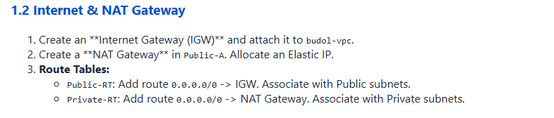
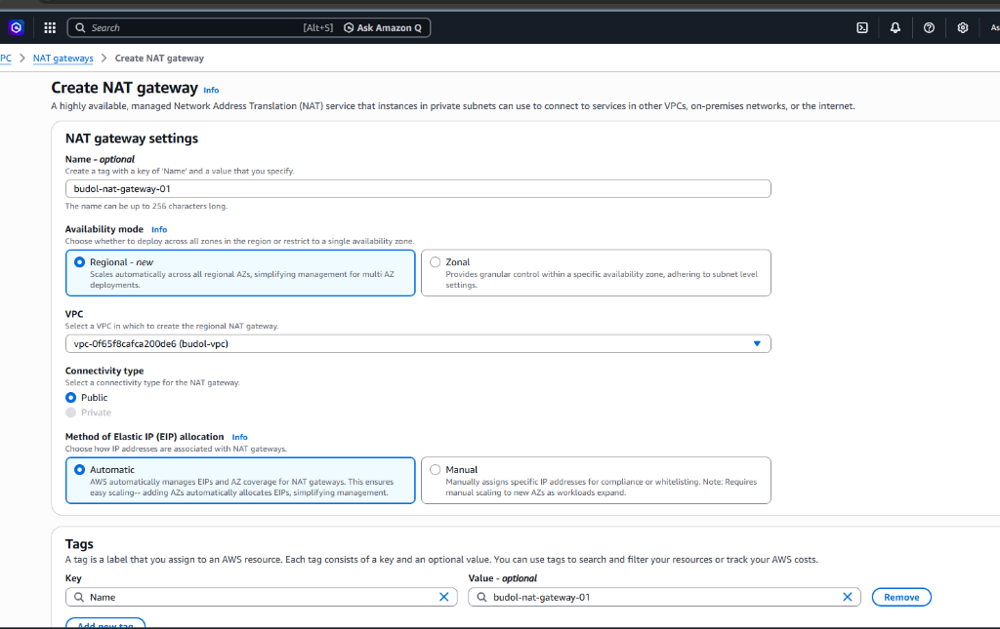
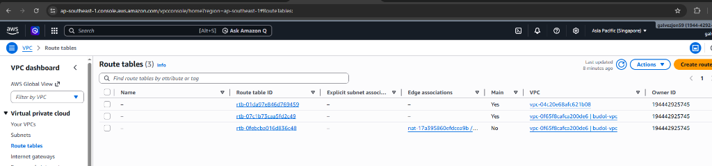

Detailed How-To: AWS Gateway Configuration
Follow this step-by-step guide to configure primary networking gateways for the BudolEcosystem v13 AWS Migration.
1 Provisioning Internet & NAT Gateways
Establish external connectivity for your public and private subnets respectively.

Action Items:
- Create an Internet Gateway (IGW): Name it
budol-igwand attach it tobudol-vpc. - Create a NAT Gateway: Place it in
Public-Asubnet.Note: NAT Gateway requires a Public connectivity type and an Elastic IP allocation.
2 Creating the NAT Gateway in the Console
Utilize the following configuration parameters in the AWS VPC Dashboard. Ensure the
Subnet field is set to a Public Subnet (e.g., Public-A).

Verified Configuration Matrix:
| Field | Required Value | Status |
|---|---|---|
| Name | budol-nat-gateway |
✅ Confirmed |
| NAT Gateway ID | nat-188d852c4670627d1 |
✅ Provisioned |
| Subnet | Public-A |
✅ Verified Public |
| VPC ID | vpc-04266673dc5662967 |
✅ Confirmed Active |
3 Updating Route Tables (Egress Control)
Direct traffic flow to ensure subnets have correct egress access via the appropriate gateways.
Navigation Path: VPC Dashboard -> Left Sidebar -> Virtual private
cloud -> Route tables.
On this page, filter by your VPC (budol-vpc). You will see two tables:

Part A: Public Route Table (Public-RT)
- Select
rtb-08e5978b7eaa70f60(Public-RT). - Go to the Routes tab and click Edit routes.
- Click Add route. Destination:
0.0.0.0/0| Target:igw-07d7bd6ff86d5f1bd. - Verify status shows
Active.
Part B: Private Route Table (Private-RT)
- Select
rtb-0516e00be63ff8625(Private-RT). - Go to Routes -> Edit routes.
- Add a route: Destination:
0.0.0.0/0| Target:nat-188d852c4670627d1(budol-nat-gw-01).
Using the AWS CLI
# 1. Update Public Route Table (Already Verified Active)
aws ec2 create-route --route-table-id rtb-08e5978b7eaa70f60 --destination-cidr-block 0.0.0.0/0 --gateway-id igw-07d7bd6ff86d5f1bd
# 2. Update Private Route Table
aws ec2 create-route --route-table-id rtb-0516e00be63ff8625 --destination-cidr-block 0.0.0.0/0 --nat-gateway-id nat-188d852c4670627d1
Verification Status: The Public Route Table has been confirmed active. Run the
Private Route Table command to finalize multi-zone internet connectivity.
4 Final Architectural Verification
Verification of the Public Route Table egress confirms correct Internet Gateway attachment.

Verified Topology Map:

Optimization Tip: Ensure DNS Hostnames and DNS Resolution
are both
Enabled in the VPC settings to support RDS and EFS endpoints.